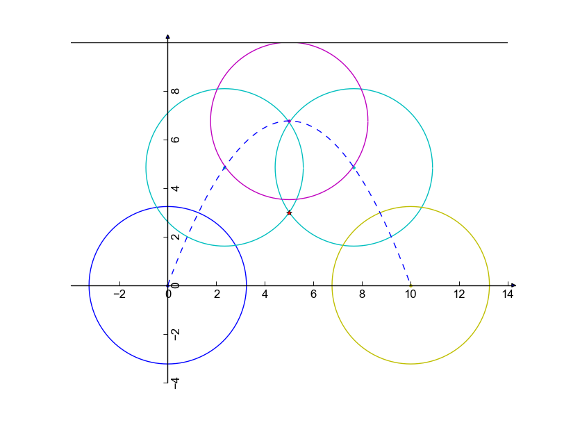

Bob is an outstanding Googler. He loves efficiency, so he does everything well and quickly. Today, Bob has discovered that the trash can near his desk has disappeared! Sadly, this means that he has to use another nearby trash can instead. Since getting out of his seat to use the trash can would lower his productivity, Bob has decided to throw his trash into that trash can!
But there are many obstacles in the Google office. For example, it is rude if the thrown trash hits somebody, or the wall, or anything else. Bob hopes to throw the trash without touching any existing obstacles.
To simplify this problem, we will only consider the vertical plane that includes Bob and the trash can. Bob is at point (0, 0); the trash can is at point (P, 0). Moreover, there are N obstacles in the office; each of them is a single point, and the i-th one has coordinates (Xi, Yi). The ceiling of the office is a line with the expression y=H in the plane. Since Bob is in one of the new high-tech floating offices, we do not consider the office floor in this problem; you do not need to worry about collisions with it. Bob will throw a piece of trash that is a circle with radius R. The center of the piece of trash starts off at (0, 0). When the piece of trash is thrown, the center of the piece of trash must follow the path of a parabola with the expression f(x)=ax(x-P), where 0 ≤ x ≤ P, and a can be any real number less than or equal to 0. The piece of trash is only considered thrown away when its center reaches the trash can's point, and it is not enough for some part of the piece of trash to just touch that point.
Bob is wondering: what is the largest piece of trash he can throw without hitting the ceiling or any obstacles? That is, we must find the maximum value of R for which there is at least one value a that satisfies the following: for any 0 ≤ x ≤ P, the Euclidean distance between (x, f(x)) and (x, H) is greater than R, and for each i, the Euclidean distance between the point (x, f(x)) and (Xi, Yi) is greater than or equal to R.
The input starts with one line containing one integer T, the number of test cases. T test cases follow. The first line of each test case contains three integers N, P, and H: the number of obstacles, the x-coordinate of the trash can, and the height of the ceiling. Then, there are N more lines; the i-th of those lines represents the i-th obstacle, and has two integers Xi and Yi, representing that obstacle's coordinates.
For each test case, output one line Case #x: y, where
x is the test case number (starting from 1) and y is
a double representing the maximum radius R. Your answer will be
considered correct if it is within an absolute or relative error of
10-4 of the correct answer. See the
FAQ for an explanation
of what that means, and what formats of real numbers we accept.
4 1 10 10 5 3 1 10 10 5 4 1 100 10 50 3 2 10 10 4 2 6 7
Case #1: 3.23874149472 Case #2: 4.0 Case #3: 3.5 Case #4: 2.23145912401
Note that the last sample case would not appear in the Small dataset.
The following picture illustrates Sample Case #1. Bob is at (0, 0), and the trash can is at (10, 0). There is a obstacle at point (5, 3), marked with a star. If Bob throws trash over the top of the obstacle, the maximal R is 3.2387, which requires an a of about -0.2705. If Bob throws trash under the obstacle, the maximal R is 3, which requires an a of 0. So the maximum R for this case is about 3.2387.
Sample Case #2 is like Sample Case #1, but the obstacle is one unit higher. Now, if Bob throws the trash under the obstacle, the maximal R is 4 (for a = 0). If he throws the trash over the obstacle, he can only use trash with a radius up to about 2.8306 (with a = -0.4). So the maximum R for this case is 4.